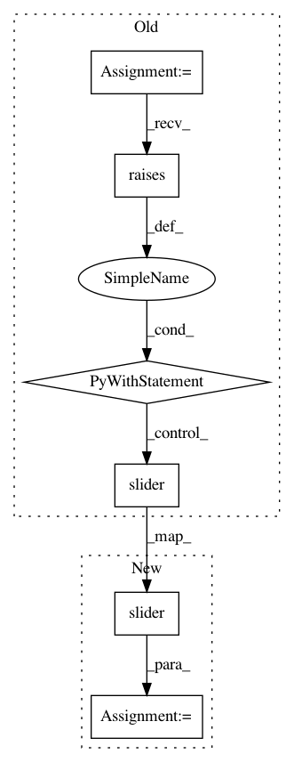

0aa2751a9b10f9f38058ba3789608de10e1df2d8,lib/tests/streamlit/slider_test.py,SliderTest,test_value_greater_than_min,#SliderTest#,57
Before Change
self.assertEqual(c.default, proto_value)
def test_value_greater_than_min(self):
with pytest.raises(StreamlitAPIException) as exc_slider:
st.slider("Slider label", 10, 100, 0)
self.assertEqual(
"The default `value` of 0 must lie between the `min_value` of 10 "
"and the `max_value` of 100, inclusively.",
str(exc_slider.value),
After Change
self.assertEqual(c.label, "the label")
def test_value_greater_than_min(self):
ret = st.slider("Slider label", 10, 100, 0)
c = self.get_delta_from_queue().new_element.slider
self.assertEqual(ret, 0)
self.assertEqual(c.min, 0)
In pattern: SUPERPATTERN
Frequency: 3
Non-data size: 6
Instances
Project Name: streamlit/streamlit
Commit Name: 0aa2751a9b10f9f38058ba3789608de10e1df2d8
Time: 2020-07-03
Author: akrolsmir@gmail.com
File Name: lib/tests/streamlit/slider_test.py
Class Name: SliderTest
Method Name: test_value_greater_than_min
Project Name: streamlit/streamlit
Commit Name: 0aa2751a9b10f9f38058ba3789608de10e1df2d8
Time: 2020-07-03
Author: akrolsmir@gmail.com
File Name: lib/tests/streamlit/slider_test.py
Class Name: SliderTest
Method Name: test_value_smaller_than_max
Project Name: streamlit/streamlit
Commit Name: 0aa2751a9b10f9f38058ba3789608de10e1df2d8
Time: 2020-07-03
Author: akrolsmir@gmail.com
File Name: lib/tests/streamlit/slider_test.py
Class Name: SliderTest
Method Name: test_max_min